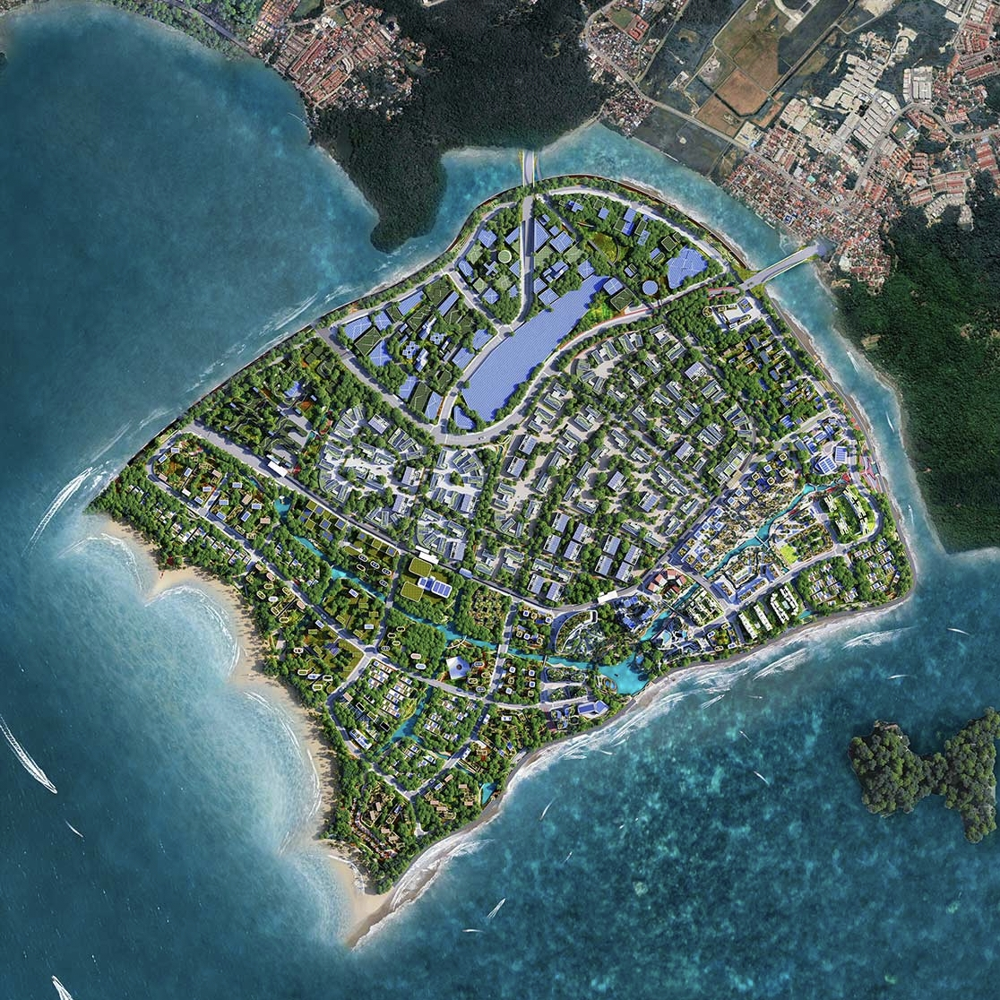

Penang South Reclamation

Overview of the Project
The Penang South Reclamation project aimed to develop utility and infrastructure models for a major land reclamation initiative in Malaysia. As a Senior BIM Modeler, I contributed by creating detailed BIM models for utilities and reclamation structures using Civil 3D and Revit.
Project Details
- Location: Penang, Malaysia
- Duration: 2023 - 2024
- Role: Senior BIM Modeler
- Worked Firm: HSS BIM Solutions Pvt. Ltd.
- Tools Used: Civil 3D, Revit, Navisworks, Dynamo (basic usage)
- Reference: Project Reference
Key Contributions
- Modeled utility networks and reclamation structures, including drainage and water systems, using Civil 3D.
- Developed parametric Revit families for infrastructure components, ensuring BEP compliance.
- Performed clash detection with Navisworks to resolve conflicts in complex reclamation models.
- Used Dynamo to automate quantity takeoffs and streamline data management.
Challenges and Solutions
The project’s environmental constraints required precise modeling. I incorporated geotechnical data into the BIM models and collaborated with environmental consultants to ensure compliance, delivering accurate models.
Outcomes
The BIM models supported efficient planning and execution of the reclamation, minimizing environmental impact and meeting project milestones.
Back to Portfolio